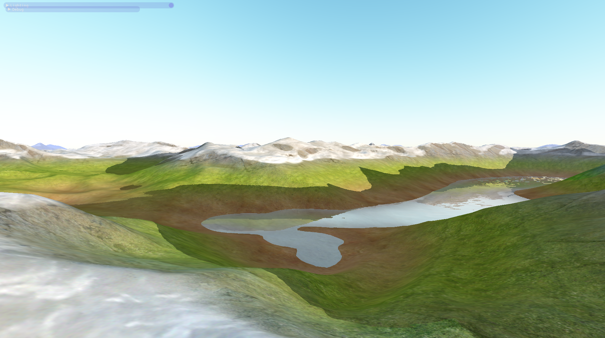
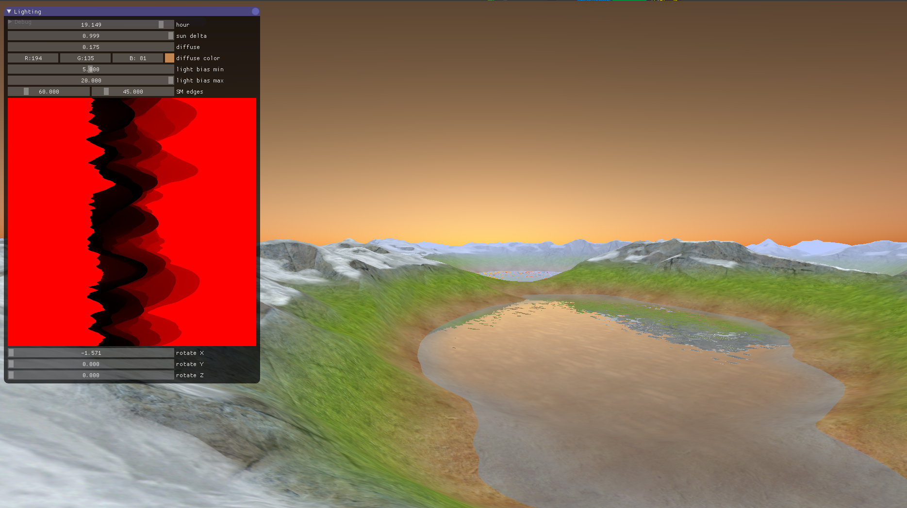
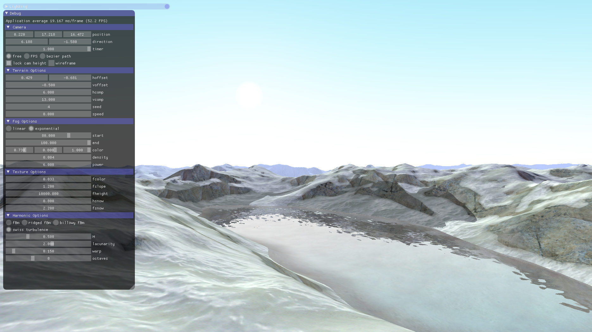

Introduction to Computer Graphics
Project – Part 3
Thierry Treyer, Dominique Roduit, Romain Gehrig
Repository of the project
1. Extras of the project
- Terrain with erosion: We implemented a terrain generator that use the derivative of the noise function to smooth the low value of the noise [1], creating the illusion of erosion and an alpine-like terrain.
Water with fresnel reflection: Using a normal map, we improved water reflection [2] to look like the water is moving. - Day cycle: You can change the time of day. The sky uses the Rayleigh and Mie scattering equations to render its colours [3]. We used an existing implementation, because we have been unable to parametrize the hour [4]. The diffuse color also depends of the time.
- Shadows: We implemented simple shadow maps using the course material.
- Infinite terrain: The terrain follows the camera and is generated on demand.
- Improved Bézier: We implemented the piecewise Bézier curves that are less prone to numerical errors when more than a few control points are involved.
- Imgui: We added early in the development a GUI library [5] and build along the tools to help use, debug and test our program.
2. Jobs split
The minimum requirements have been splitted equally between all members of the group.
The extras have the following credits:
- Terrain with erosion: Dominique Roduit
- Water with fresnel reflection: Romain Gehrig
- Day cycle: Thierry Treyer
- Shadows: Thierry Treyer
- Infinite terrain: Thierry Treyer & Romain Gehrig
- Improved Bézier: Romain Gehrig
- Imgui: Setup - Thierry Treyer, Improvements - Whole team
3. References
[1] Swiss Turbulence - http://www.decarpentier.nl/scape-procedural-extensions
[2] Nice water - https://www.youtube.com/watch?v=HusvGeEDU_U&
[3] Atmospheric Scattering - https://hal.inria.fr/file/index/docid/288758/filename/article.pdf
[4] glsl-atmosphere - https://github.com/wwwtyro/glsl-atmosphere
[5] imgui - https://github.com/ocornut/imgui
[6] Texture pack - https://opengameart.org/content/29-grounds-and-walls-and-water-1024x1024


